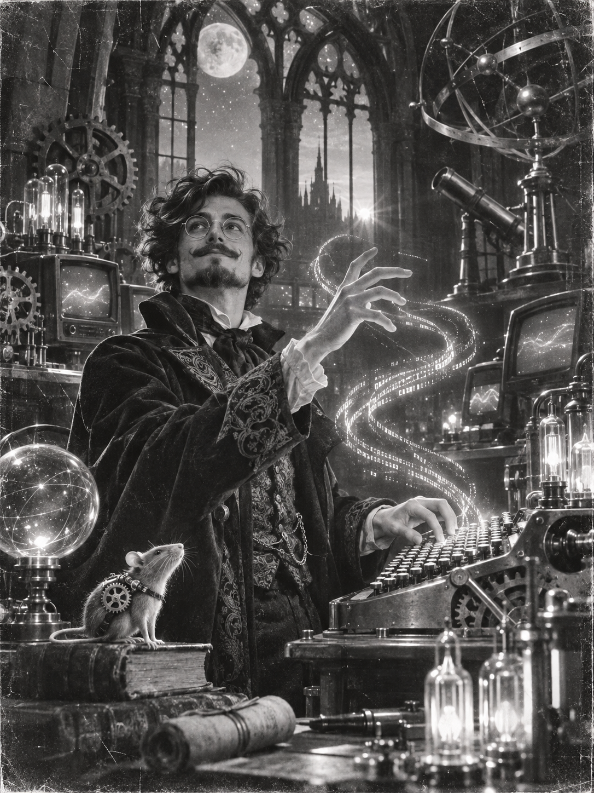

Morning Edition
6:00 AM CSTFinance & Markets
Markets Brace for Anthropic’s Public Debut
World shares traded unevenly Thursday while U.S. futures climbed ahead of Anthropic’s closely watched Nasdaq debut. Investors are treating the listing as a live benchmark for whether extraordinary AI adoption and infrastructure spending can translate into durable public-market profits.
Source: Associated Press, November 19, 2026KKR Closes $5.7 Billion Integer Take-Private
KKR completed its $5.7 billion acquisition of medical-device outsourcer Integer, one of the day’s largest private-equity closings. Elsewhere, EQT agreed to buy energy-storage developer Flatiron Energy, keeping health care and power infrastructure firmly on the buyout map.
Source: Axios Pro Rata, November 18, 2026World & US
World Court Rules Myanmar Committed Rohingya Genocide
The United Nations’ top court ruled Thursday that Myanmar committed genocide against the Rohingya in its 2017 military campaign. The landmark judgment gives international law a rare moment of sharp definition after years of testimony, displacement and demands for accountability.
Source: Associated Press, November 19, 2026Three Powers Signal Talks on Nuclear Risk and UN Reform
Chinese and Russian officials said China, Russia and the United States agreed to pursue United Nations reforms, increase fuel supplies and continue dialogue aimed at reducing nuclear risk. The announcement followed a rare meeting among Xi Jinping, Vladimir Putin and Donald Trump in Shenzhen.
Source: Associated Press, November 19, 2026Mississippi Democrats Seek Review of Inactive Voter Spike
Mississippi lawmakers are asking oversight committees to investigate a sharp rise in voters marked inactive before the midterms, including how credit-reporting data was used to examine voter rolls. The dispute puts data quality, due process and election administration under the same debugger.
Source: Associated Press, November 19, 2026Begich Holds Alaska’s Lone House Seat
Republican Nick Begich won reelection to Alaska’s at-large U.S. House seat, a rare bright spot for the GOP after Democrats captured both chambers in the midterms. The result preserves one of the country’s most geographically expansive congressional assignments.
Source: Associated Press, November 19, 2026
The Skill Forge: turn one honest feeling into one durable piece of craft.
“Stamina is not haste; it is the spell that keeps good work alive.”— The Developer’s Almanac
Sagittarius Developer Horoscope
Justin, the Scorpio Sun’s links with Chiron and Mars make creative work restorative today, but the Pisces Moon warns against spending the whole battery on the first exciting branch. Mercury and Saturn favor structures that compound skill: choose one honest challenge, name the feeling behind it, and build the smallest repeatable system that moves it forward. Tonight’s Aries Moon returns extra spark and charisma. Your Sagittarius fire supplies courage; your Year-of-the-Rat ingenuity finds the hidden route. Your lucky command is feel --honestly && scope --wisely && build --steadily. Today’s rule: sustainable magic ships more than frantic brilliance.
Tech, AI, Space & Crypto
-
Anthropic’s IPO Becomes AI’s Public-Market Test
Anthropic’s proposed offering puts 825 million Class A shares into one of the year’s defining technology listings. Beyond the opening print, developers and investors will watch whether frontier-model demand can support the enormous capital requirements of training, inference and safety research.
Source: Anthropic, November 10, 2026; market debut November 19 -
AI Drug Discovery Draws a $5 Billion Round
Isomorphic Labs, the AI drug-discovery company led by Demis Hassabis, raised $5 billion in Series C funding led by Greenoaks and Sequoia. It is a huge bet that machine learning can move beyond digital assistants and compress the costly search for new medicines.
Source: Axios Pro Rata, November 18, 2026 -
Dragon Gets a New Thursday Undocking Window
NASA and SpaceX stood down from Wednesday’s Dragon departure because of weather near California splashdown sites. Teams shifted to a Thursday opportunity for the spacecraft, carrying more than 6,300 pounds of station science and supplies back toward Earth.
Source: NASA, updated November 18, 2026 -
Bitcoin Slips Below $63,000 as Risk Appetite Thins
Bitcoin fell below $63,000 after a sharp weekend selloff, while analysts noted that the once-popular crypto basis trade now offers yields near or below Treasurys. The market remains caught between long-term holders’ support zone and tightening-rate expectations.
Source: CoinDesk, updated November 19, 2026
Morning Compile
- Markets: global shares are mixed while Anthropic’s Nasdaq debut tests AI appetite.
- Private capital: KKR closes its $5.7 billion Integer take-private.
- World: the UN’s top court rules Myanmar committed genocide against the Rohingya.
- Diplomacy: China, Russia and the US signal talks on UN reform, fuel supply and nuclear risk.
- US: Mississippi lawmakers seek review of inactive voter rolls; Begich holds Alaska’s House seat.
- AI: Isomorphic Labs raises $5 billion to push machine learning deeper into drug discovery.
- Space and crypto: Dragon targets a Thursday return while bitcoin trades below $63,000.
- Today’s spell: choose the right-sized challenge, build the structure, and let steady craft compound.